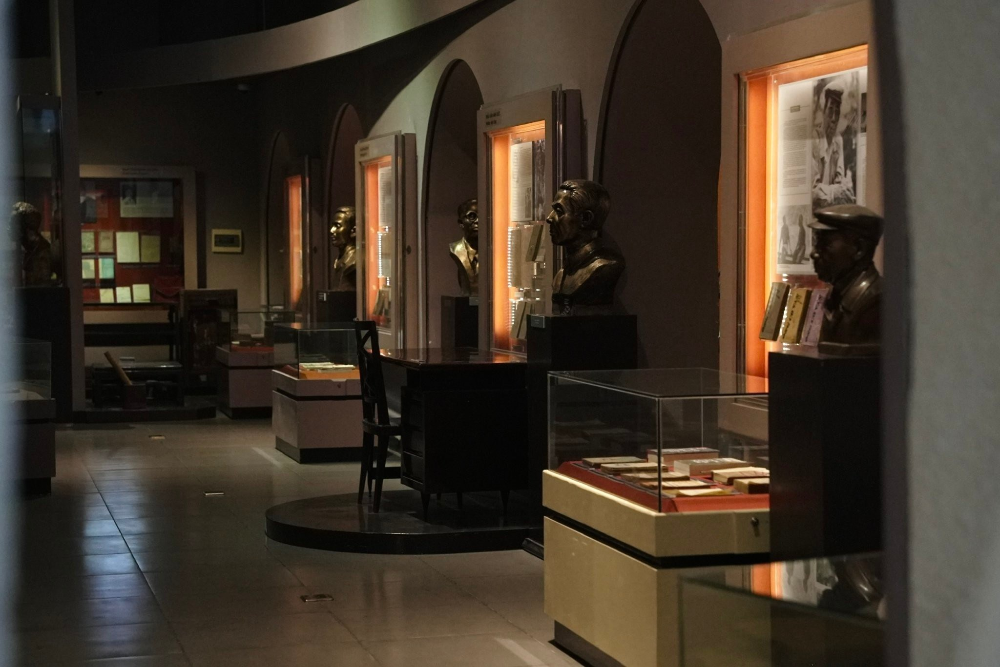
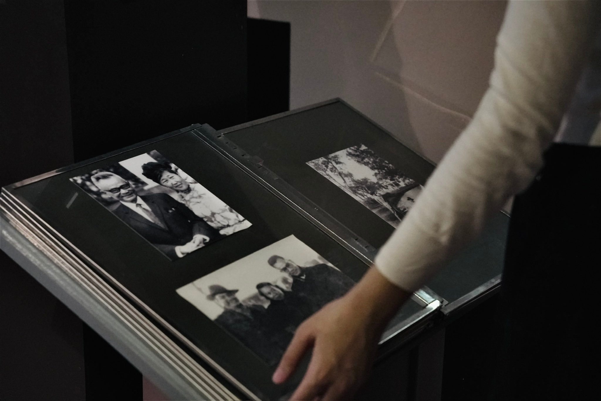

Trong bài
Xu hướng du lịch một mình (solo travel) đang mở ra những cách khám phá và tận hưởng thời gian riêng được nhiều người trẻ quan tâm. Không cần đi xa, một buổi “solo date” tại Bảo tàng Văn học Việt Nam cũng là gợi ý thú vị để thử trải nghiệm này ngay giữa lòng Hà Nội.
Từ những chuyến du lịch tự túc đến các buổi hẹn hò với bản thân, ngày càng nhiều người trẻ lựa chọn những hoạt động có thể tự mình trải nghiệm mà không cần người đồng hành. Trong đó, tham quan bảo tàng là một gợi ý phù hợp bởi du khách có thể chủ động lựa chọn những nội dung yêu thích và khám phá theo nhịp độ riêng. Với nhiều không gian trưng bày cùng những câu chuyện về các tác giả, tác phẩm quen thuộc, Bảo tàng Văn học Việt Nam là điểm đến đáng cân nhắc cho một buổi solo date.

Bắt đầu chuyến khám phá
Một buổi solo date có thể bắt đầu bằng việc lựa chọn khu trưng bày mà bạn muốn khám phá. Bảo tàng Văn học Việt Nam giới thiệu tiến trình phát triển của văn học dân tộc qua các thời kỳ, với nhiều tư liệu, hình ảnh và hiện vật gắn liền với những tác giả tiêu biểu. Đây cũng là dịp để du khách gặp lại những nhà văn, nhà thơ quen thuộc trong sách giáo khoa, đồng thời hiểu rõ hơn về cuộc đời, sự nghiệp và những câu chuyện phía sau các tác phẩm của họ.


Bạn có thể chuẩn bị một cuốn sổ nhỏ để ghi lại tên tác phẩm muốn đọc, các chi tiết kiến trúc, hiện vật hoặc những thông tin thú vị. Hoạt động này giúp trải nghiệm bảo tàng trở nên đáng nhớ hơn.
Với nhiều người, ghi lại những khoảnh khắc trong chuyến tự tham quan cũng là một cách lưu giữ kỷ niệm. Tại Bảo tàng Văn học Việt Nam, khu vực cầu thang kính, hành lang triển lãm hay vườn tượng đều có thể trở thành bối cảnh cho những bức ảnh lưu giữ khoảnh khắc.

Tận hưởng thời gian riêng theo cách mình muốn
Solo date ngày càng được nhiều người trẻ yêu thích có lẽ bởi sự tự do lựa chọn và tận hưởng những trải nghiệm theo sở thích cá nhân. Tại Bảo tàng Văn học Việt Nam, bạn có thể thong thả khám phá các khu trưng bày, dừng lại lâu hơn trước một hiện vật yêu thích hoặc dành thời gian đọc kỹ những câu chuyện về các tác giả, tác phẩm. Không bị giới hạn bởi lịch trình chung, chuyến tham quan một mình trở thành dịp để mỗi người tận hưởng không gian văn hóa theo sở thích và nhịp độ riêng.
Với những người thường xuyên làm việc trong môi trường nhiều tiếng ồn, một không gian yên tĩnh cũng là lựa chọn để tạm rời xa cuộc sống bận rộn.
Kết thúc chuyến tham quan, bạn có thể xem lại những bức ảnh đã chụp, những thông tin thú vị vừa khám phá hoặc tìm đọc thêm một tác phẩm khiến mình ấn tượng. Đôi khi, chính những điều nhỏ bé ấy lại khiến buổi hẹn với bản thân trở nên đáng nhớ hơn.
Một buổi solo date tại Bảo tàng Văn học Việt Nam là dịp để bạn tạm gác lại những bộn bề thường ngày, dành thời gian cho sở thích cá nhân và khám phá văn chương theo cách riêng. Giữa những không gian lưu giữ dấu ấn của nhiều thế hệ người cầm bút, bạn có thể gặp lại những tác giả, tác phẩm quen thuộc và tìm thấy những câu chuyện mà trước đây mình chưa có dịp biết đến. Biết đâu, sau chuyến đi ấy, bạn sẽ muốn dành thêm nhiều cuộc hẹn như thế cho chính mình.
Bảo tàng Văn học Việt Nam